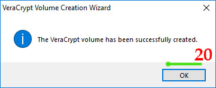

Mailvelope || ميل فيلوب
الاسم: ميل فيلوب
المهمة: تشفير الايميلات والمرفقات
يعمل على المتصفحات التالية: فايرفوكس، جوجل كروم، ومايكروسوفت إيدج
الثمن: مجاني
كيف يعمل؟
بسبب أهمية المراسلات والايميلات التي نقوم بها بشكل يومي، وجب علينا حماية البيانات من الخطر. هنا جاء دور إضافة الميل فيلوب، وهي إضافة لمتصفح الانترنت مثل كروم وفايرفوكس تتيح لنا الإضافة تشفير الايميلات المرسلة من قبلنا بمفاتيح تشفير ومفاتيح فك تشفير نقوم بمشاركتها مع الجهة المستقبلة
يمتاز الميل فيلوب بالتالي:
يمكن من خلاله إرسال ملفات مرفقة داخل الإيميل، يقوم بتشفيرها بشكل تلقائي ويتم فك التشفير عنها عن طريق رمز أو مفتاح خاص. لا يقدم الإيميل العادي هذه الخدمة حيث يرفض إرسال ملفات مشفرة مسبقاَ; بمعنى: لو قمنا بتشفير ملف عن طريق برنامج فيرا كريب لا يقبل الإيميل أن يرسله إلا إذا أرسلناه بغير تشفير
يتكون هذا الدليل من ثلاثة أقسام رئيسية :
1- إضافة الميل فيلوب إلى المتصفح:
-
الحصول على التطبيق:
- لجميع المتصفحات نضغط هنا
-
تظهر الصفحة التالية، نقوم بالضغط على "Download Mailvelope"
- تظهر الصفحة التالية، نضغط على "إضافة إلى Chrome"

- تظهر النافذة التالية، نضغط على "Add Ectension"

- نضغط على خيار "Next"
 صفحة Encryption Options
صفحة Encryption Options - نختار الخوارزمية التي نريدها، يمكن اختيار أي خوارزمية
- نضغط على خيار "Next" صفحة Volume Size
- نكتب قيمة الحجم
بعد إنشاء المجلد المشفر، لا يمكن تغيير حجمه - نختار مقياس الحجم: كيلو بايت - ميغا بايت - غيغا بايت - تيرا بايت
- كل 1000 كيلو بايت = 1 ميغا بايت
- كل 1000 ميغا بايت = 1 غيغا بايت
- كل 1000 غيغا بايت = 1 تيرا بايت
- نضغط على "Next" صفحة Volume Password
- ضمن خانة "Password" نضع كلمة السر التي نريدها
- ضمن خانة "Confirm" نقوم بإعادة كتابة كلمة السر مرة اُخرى يجب عدم نسيان أو فقدان كلمة السر، ﻷنه لا يوجد طريقة ﻹستعادة أو اعادة تعيين كلمة السر في حال فقدانها يمكن تغيير كلمة السر لاحقاً "بشرط وجود كلمة السر الحالية"
- بعد ادخال كلمة السر، نضغط على الخيار "Next"
- عند إدخال كلمة سر أقل من 20 خانة، ستظهر الرسالة التالية، نضغط على خيار "Yes"
 صفحة Volume Format
صفحة Volume Format - نضغط على خيار "Format" عند الإنتهاء من عملية التهيئة، تظهر الرسالة التالية، وتعني أن عملية إنشاء المجلد المشفر تمت بنجاح
- نضغط على خيار "OK"

يختلف الوقت الذي يستغرقه البرنامج بالتهيئة بحسب حجم المجلد الذي اخترناه (كلما زاد حجم المجلد، كلما
زاد وقت التهيئة، كما
يتعلق الأمر بمواصفات الجهاز الذي نعمل عليه) - عند عدم الرغبة بإنشاء مجلد جديدة، نضغط على خيار "Exit"
تحديد خوارزمية التشفير التي نريد استخدامها

تحديد حجم المجلد التي نريد انشائه

إنشاء كلمة سر للمجلد المشفر

تهيئة المجلد المشفر

صفحة Volume Create
إنشاء مجلد جديدة مشفر

عند الرغبة بإنشاء مجلد مشفر جديد، نضغط على خيار "Next"، ونتابع الخطوات السابقة.